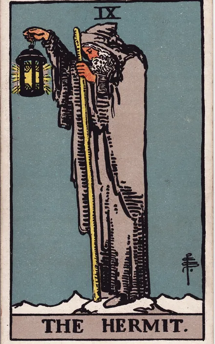

A TU LADO
Aprende mientras recorres ARCANUM.
Sendero ilumina una función a la vez. Tú decides cuándo seguir.

Una guía que espera tu paso. Calma, opcional y siempre abierta para volver.
Tu mapa natal y el cielo presente comparten una misma cámara.
Una guía breve para recorrer ARCANUM a tu ritmo. Puedes dejarla en cualquier momento.
Sendero ilumina una función a la vez. Tú decides cuándo seguir.
Tu mapa natal y el cielo presente comparten una misma cámara.
Ábrelo. Sendero esperará tu gesto antes de continuar.
Saliste de Sendero. Puedes volver cuando quieras desde el menú o desde Ajustes.